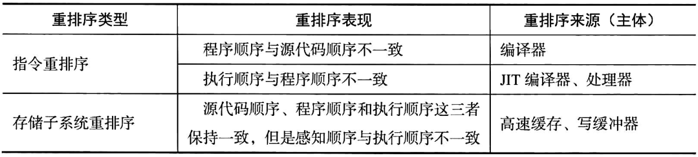
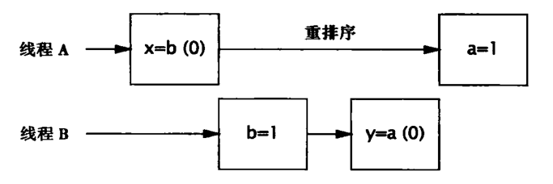
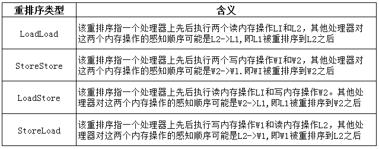
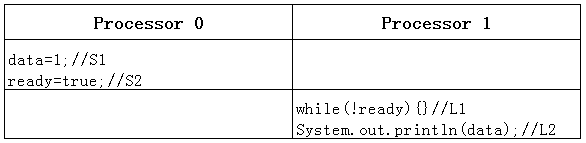

一般而言，如果一个类在单线程环境下能够运作正常，并且在多线程环境下，在其使用方不必为其做任何改变的情况下也能运作正常，那么我们就称其是线程安全的。反之，如果一个类在单线程环境下运作正常而在多线程环境下则无法正常运作，那么这个类就是非线程安全的。因此， 一个类如果能够导致竞态，那么它就是非线程安全的；而一个类如果是线程安全的，那么它就不会导致竞态。下面是《Java并发编程实战》一书中给出的对于线程安全的定义：
当多个线程访问某个类时，不管运行时环境采用何种调度方式或者这些线程将如何交替执行，并且在代码中不需要任何额外的同步或协同，这个类都能表现出正确的行为，那么就称这个类是线程安全的。
使用一个类的时候我们必须先弄清楚这个类是否是线程安全的。因为这关系到我们如何正确使用这些类。Java标准库中的一些类如ArrayList、HashMap和SimpleDateFormat，都是非线程安全的，在多线程环境下直接使用它们可能导致一些非预期的结果，甚至是一些灾难性的结果。一般来说，Java标准库中的类在其API文档中会说明其是否是线程安全的（没有说明其是否是线程安全的，则可能是也可能不是线程安全的）。
从线程安全的定义上我们不难看出，如果一个线程安全的类在多线程环境下能够正常运作，那么它在单线程环境下也能正常运作。既然如此，那为什么不干脆把所有的类都做成线程安全的呢？是否将一个类做成线程安全的，从某种程度上来说是一个设计上的权衡的结果或决定：一方面，一个类是否需要是线程安全的与这个类预期被使用的方式有关，比如，我们希望一个类总是只能被一个线程独自使用，那么就没有必要将这个类做成线程安全的。其次，把一个类做成线程安全的往往是有额外代价的。
一个类如果不是线程安全的，我们就说它在多线程环境下直接使用存在线程安全问题。线程安全问题概括来说表现为3个方面：原子性、可见性和有序性。
原子的字面意思是不可分割的。对于涉及共享变量访问的操作，若该操作从其执行线程以外的任意线程来看是不可分割的，那么该操作就是原子操作，相应地我们称该操作具有原子性。所谓“不可分割”，其中一个含义是指访问某个共享变量的操作从其执行线程以外的任何线程来看，该操作要么已经执行结束要么尚未发生，即其他线程不会“看到”该操作执行了部分的中间效果。
在生活中我们可以找到的一个原子操作的例子就是人们从ATM机提取现金：尽管从ATM软件的角度来说，一笔取款交易涉及扣减户账户余额、吐出钞票、新增交易记录等一系列操作，但是从用户的角度来看ATM取款就是一个操作。该操作要么成功了，即我们拿到现金（账户余额会被扣减）这个操作发生过了；要么失败了，即我们没有拿到现金，这个操作就像从来没有发生过一样（账户余额也不会被扣减）。除非ATM软件有缺陷，否则我们不会遇到吐钞口吐出部分现金而我们的账户余额却被扣除这样的部分结果。
总的来说，Java中有两种方式来实现原子性。一种是使用锁（Lock）。锁具有排他性，即它能够保障一个共享变量在任意时刻只能够被一个线程访问。这就排除了多个线程在同一时刻访问同一个共享变量而导致干扰与冲突的可能，即消除了竞态。另一种是利用处理器提供的专门CAS（Compare-and-Swap）指令。CAS指令实现原子性的方式与锁实现原子性的方式实质上是相同的，差别在于锁通常是在软件这一层次实现的，而CAS是直接在硬件（处理器和内存）这一层次实现的，它可以被看作“硬件锁”。
在Java语言中，long型和double型以外的任何类型的变量的写操作都是原子操作，即对基础类型（long、double除外）的变量和引用型变量的写操作都是原子的。这点是由Java语言规范(Java Language Specification）规定，由Java虚拟机具体实现。一个long/double型变量的读/写操作在32位Java虚拟机下可能会被分解为两个子步骤（比如先写低32位，再写高32位）来实现，这就导致一个线程对long/double型变量进行的写操作的中间结果可以被其他线程所观察到，即此时针对long/double类型的变量的访问操作不是原子操作。尽管如此，Java语言规范特别地规定对于volatile关键字修饰的long/double类型变量的写操作具有原子性。因此，我们只需要用volatile关键字（下一篇文章会进一步介绍该关键字）修饰可能被多个线程访问的long/double类型的变量，就可以保障对该变量的写操作的原子性。
在多线程环境下，一个线程对某个共享变量进行更新之后，后续访问该变量的线程可能无法立刻读取到这个更新的结果，甚至永远也无法读取到这个更新的结果。这就是线程安全问题的另外一个表现形式：可见性。
下面看一个可见性的例子：
// Code 2-2
public class VisibilityDemo {
public static void main(String[] args) {
UselessThread uselessThread = new UselessThread();
uselessThread.start();
try {
Thread.sleep(500);
} catch (InterruptedException e) {
e.printStackTrace();
}
uselessThread.cancel();
}
}
class UselessThread extends Thread {
private boolean cancelled = false;
@Override
public void run() {
System.out.println("Task has been started.");
while (!cancelled) {}
System.out.println("Task has been cancelled.");
}
public void cancel() {
cancelled = true;
}
}上面的程序中，主线程在uselessThread线程启动，此时该线程会输出“Task has been started.”，一秒后，主线程会调用uselessThread的cancel方法，也就是将uselessThread的calcelled变量置为true。理论上来说，此时uselessThread的run方法中的while循环会结束，并在输出“Task has been cancelled.”后结束线程。然而，运行该程序，我们会看到如下输出：
Task has been started. 我们发现，程序并没有输出“Task has been cancelled.”，程序仍然一直在运行（如果没有出现这种现象可以在java命令后加上-server参数）。这种现象只有一种解释，那就是run方法中的while陷入了死循环。也就是说，子线程uselessThread读到的cancel变量值始终是false，尽管主线程已经将这个变量的值更新为true。可见，这里产生了可见性问题，即main线程对共享变量cancelled的更新对子线程uselessThread不可见。
上述例子中的可见性问题是因为代码没有给JIT编译器足够的提示而使得其认为状态变量cancelled只有一个线程对其进行访问，从而导致JIT编译器为了避免重复读取状态变量cancelled以提高代码的运行效率，而将run方法中的while循环优化成与如下代码等效的机器码：
if (!cancelled) {
while (true) {}
} 不幸的是，此时这种优化导致了死循环，也就是我们所看到的程序一直运行而没有退出。
另一方面，可见性问题与计算机的存储系统有关。程序中的变量可能会被分配到寄存器而不是主内存中进行存储。每个处理器都有其寄存器，而一个处理器无法读取另外一个处理器上的寄存器中的内容。因此，如果两个线程分别运行在不同的处理器上，而这两个线程所共享的变量却被分配到寄存器上进行存储，那么可见性问题就会产生。另外，即便某个共享变量是被分配到主内存中进行存储的，也不能保证该变量的可见性。这是因为处理器对主内存的访问并不是直接访问，而是通过其高速缓存子系统进行的。如果高速缓存子系统中的内容没有及时更新，那么处理器读取到的值仍然有可能是一个旧值，这同样会导致可见性问题。
处理器并不是直接与主内存打交道而执行内存的读、写操作，而是通过寄存器、高速缓存、写缓冲器和无效化队列等部件执行内存的读、写操作的。从这个角度来看，这些部件相当于主内存的副本，因此本书为了叙述方便将这些部件统称为处理器对主内存的缓存，简称处理器缓存。
虽然一个处理器的高速缓存中的内容不能被另外一个处理器直接读取，但是一个处理器可以通过缓存一致性协议（Cache Coherence Protocol）来读取其他处理器的高速缓存中的数据，并将读到的数据更新到该处理器的高速缓存中。这种一个处理器从其自身处理器缓存以外的其他存储部件中读取数据并将其更新到该处理器的高速缓存的过程，我们称之为缓存同步，这些存储部件包括处理器的高速缓存、主内存。缓存同步使得一个处理器上运行的线程可以读取到另外一个处理器上运行的线程对共享变量所做的更新，即保障了可见性。因此，为了保障可见性，我们必须使一个处理器对共享变量所做的更新最终被写入该处理器的高速缓存或者主内存中（而不是始终停留在其写缓冲器中），这个过程被称为冲刷处理器缓存。并且，一个处理器在读取共享变量的时候，如果其他处理器在此之前已经更新了该变量．那么该处理器必须从其他处理器的高速缓存或者主内存中对相应的变量进行缓存同步。这个过程被称为刷新处理器缓存。因此，可见性的保障是通过使更新共享变量的处理器执行冲刷处理器缓存的动作，并使读取共享变量的处理器执行刷新处理器缓存的动作来实现的。
那么，在Java平台中我们如何保证可见性呢？实际上，使用volatile关键字就可以保证可见性。对于Code 2-2所示的代码，我们只需要在实例变量cancelled的声明中添加一个volatile关键字即可：
private volatile boolean cancelled = false; 这里，volatile关键字所起到的一个作用就是，提示JIT编译器被修饰的变量可能被多个线程共享，以阻止JIT编译器做出可能导致程序运行不正常的优化。另外一个作用就是读取一个volatile关键字修饰的变量会使相应的处理器执行刷新处理器缓存的动作，写一个volatile关键字修饰的变量会使相应的处理器执行冲刷处理器缓存的动作，从而保障了可见性。
对于同一个共享变量而言，一个线程更新了该变量的值之后，其他线程能够读取到这个更新后的值，那么这个值就被称为该变量的相对新值。如果读取这个共享变量的线程在读取并使用该变量的时候其他线程无法更新该变量的值，那么该线程读取到的相对新值就被称为该变量的最新值。可见性的保障仅仅意味着一个线程能够读取到共享变量的相对新值，而不能保障该线程能够读取到相应变量的最新值。
针对原子性，Java语言规范中还定义了两条与线程的启动和停止有关的规范：
有序性指在某些情况下一个处理器上运行的一个线程所执行的内存访问操作在另外一个处理器上运行的其他线程看来是乱序的。所谓乱序，是指内存访问操作的顺序看起来像是发生了变化。在进一步介绍有序性这个概念之前，我们需要先介绍重排序的概念。
顺序结构是编程中的一种基本结构，它表示我们希望某个操作必须先于另外一个操作得以执行。另外，两个操作即便是可以用任意一种顺序执行，但是反映在代码上这两个操作也总是有先后关系。但是在多核处理器的环境下，这种操作执行顺序可能是没有保障的：编译器可能改变两个操作的先后顺序；处理器可能不是完全依照程序的目标代码所指定的顺序执行指令；另外，一个处理器上执行的多个操作，从其他处理器的角度来看其顺序可能与目标代码所指定的顺序不一致。这种现象就叫作重排序。
重排序是对内存访问有关的操作（读和写）所做的一种优化，它可以在不影响单线程程序正确性的情况下提升程序的性能。但是，它可能对多线程程序的正确性产生影响，即它可能导致线程安全问题。与可见性问题类似，重排序也不是必然出现的。
重排序的潜在来源有许多，包括编译器（在Java平台中这基本上指JIT编译器）、处理器和存储子系统（包括写缓冲器、高速缓存）。为了便于下面的讲解，我们先定义几个与内存操作顺序有关的术语：
在此基础上，我们将重排序划分为指令重排序和存储子系统重排序两种，如下表所示：

在学习指令重排序的概念之前，我们先来了解一下JVM的执行方式。
我们都知道，Java代码的执行过程是，先由编译器将.java文本文件编译成.class二进制文件，然后再由JVM将生成的二进制文件编译为机器码来执行。这里根据如何对二进制代码进行编译可以将JVM的执行方式分为三种，分别是解释执行、编译执行和混合执行。
解释执行是指所有的二进制代码都在每次执行的时候临时进行编译，也就是一边编译一边执行。这样做无疑会降低程序的执行效率，因为代码在每一次执行的时候都会重新编译，及时是那些执行很频繁的代码。通过-Xint参数可以指定JVM在运行的时候使用这种模式。假设已经有一个编译好的HelloWorld.class文件，那么可以使用下面的命令让程序以解释执行模式运行：
java -Xint HelloWorld编译执行是指由编译器将目标代码一次性全部编译成目标程序，再由机器运行目标程序。这样相比解释执行来说虽然启动较慢，但启动之后的执行速度会得到很大的提升。不过，这种执行方式也有缺点，那就是尽管有些代码执行的频率很低，JVM仍然会将其预先编译为机器码，这也是造成这种执行方式启动慢的最主要原因。通过-Xcomp可以指定JVM在运行的时候使用这种模式，就像下面这样：
java -Xcomp HelloWorld混合执行则是将这两种执行方式结合了起来。程序最开始的时候采用的执行方式是解释执行，当虚拟机发现某个方法或代码块的运行特别频繁时，就会把这些代码认定为“热点代码”。为了提高热点代码的执行效率，在运行时，虚拟机将会把这些代码编译成与本地平台相关的机器码，并进行各种层次的优化，完成这个任务的编译器称为即时编译器（Just In Time Compiler，下文统称JIT编译器）。这种执行方式也是JVM默认的执行方式，如果要显式地指定JVM使用这种模式，可以使用-Xmixed参数：
java -Xmixed HelloWorld JIT编译器并不是虚拟机必须的部分，Java虚拟机规范并没有规定Java虚拟机内必须要有即时编译器存在，更没有限定或指导即时编译器应该如何去实现。但是，JIT编译器编译性能的好坏、代码优化程度的高低却是衡量一款商用虚拟机优秀与否的最关键的指标之一，它也是虚拟机中最核心且最能体现虚拟机技术水平的部分。
现在回过头来看指令重排序。当源代码顺序与程序顺序不一致，或者程序顺序与执行顺序不一致的情况下，我们就说发生了指令重排序。指令重排序是一种动作，它确确实实地对指令的顺序做了调整，其重排序的对象是指令。在Java平台中，静态编译器javac基本上不会进行指令重排序，而JIT编译器则可能在优化的过程中执行指令重排序。
来看下面的程序：
// Code 2-3
public class PossibleReordering {
private static int a;
private static int b;
private static int x;
private static int y;
public static void main(String[] args) {
Thread threadA = new Thread(() -> {
a = 1;
x = b;
});
Thread threadB = new Thread(() -> {
b = 1;
y = a;
});
threadA.start();
threadB.start();
try {
threadA.join();
threadB.join();
System.out.printf("(%d,%d)", x, y);
} catch (InterruptedException e) {
e.printStackTrace();
}
}
}由于线程A可以在线程B开始之前就执行完成，线程B也有可能在线程A开始之前就完成，二者也有可能交替执行，因此，程序最终会输出什么是不确定的。但是，按照我们的认知，每个线程内的操作应该是按照代码的顺序来执行的。也就是说，a=1应该是在x=b之前执行的，b=1应该是在y=a之前执行的。我们可以对这几个操作进行简单的排列来分析最终的输出结果：
| 操作1 | 操作2 | 操作3 | 操作4 | 结果 |
|---|---|---|---|---|
| a=1 | x=b | b=1 | y=a | (0,1) |
| a=1 | b=1 | x=b | y=a | (1,1) |
| a=1 | b=1 | y=a | x=b | (1,1) |
| b=1 | y=a | a=1 | x=b | (1,0) |
| b=1 | a=1 | y=a | x=b | (1,1) |
| b=1 | a=1 | x=b | y=a | (1,1) |
可以看到，在没有正确同步的情况下，程序输出(1,0)、(0,1)或(1,1)都是有可能的。但奇怪的是，程序还可以输出(0,0)，这个结果不属于上面分析的任何一种情况。由于上面的每个线程中的各个操作之间不存在数据流依赖性，可能会发生指令重排序，因此这些操作有可能会乱序执行。下图给出了一种可能由重排序导致的交替执行方式，在这种情况中会输出(0,0)。

由此可以看出，重排序可能导致线程安全问题。当然，这并不表示重排序本身是错误的，而是我们的程序本身有问题：我们的程序没有使用或者没有正确地使用线程同步机制。不过，重排序也不是必然出现的，上面的(0,0)是在程序大概运行了50000次左右才出现了一次。尽管如此，我们并不能忽视重排序带来的潜在的风险。
处理器也可能执行指令重排序，这使得执行顺序与程序顺序不一致。处理器对指令进行重排序也被称为处理器的乱序执行，在条件允许的情况下，直接运行当前有能力立即执行的后续指令，避开获取下一条指令所需数据时造成的等待。通过乱序执行的技术，处理器可以大大提高执行效率。处理器的指令重排序并不会对单线程程序的正确性产生影响，但是它可能导致多线程程序出现非预期的结果。
主内存（RAM）相对于处理器是一个慢速设备。为了避免其拖后腿，处理器并不是直接访问主内存，而是通过高速缓存访问主内存的。在此基础上，现代处理器还引入了写缓冲器以提高写高速缓存操作的效率。有的处理器（如Intel的x86处理器）对所有的写主内存的操作都是通过写缓冲器进行的。这里，我们将写缓冲器和高速缓存统称为存储子系统，它其实是处理器的子系统。
即使在处理器严格依照程序顺序执行两个内存访问操作的情况下，在存储子系统的作用下其他处理器对这两个操作的感知顺序仍然可能与程序顺序不一致，即这两个操作的执行顺序看起来像是发生了变化。这种现象就是存储子系统重排序，也被称为内存重排序。
指令重排序的重排序对象是指令，它实实在在地对指令的顺序进行涸整，而存储子系统重排序是一种现象而不是一种动作，它并没有真正对指令执行顺序进行调整，而只是造成了一种指令的执行顺序像是被调整过一样的现象，其重排序的对象是内存操作的结果。
从处理器的角度来说，读内存操作的实质是从指定的RAM地址加载数据（通过高速缓存加载）到寄存器，因此读内存操作通常被称为Load, 写内存操作的实质是将数据存储到指定地址表示的RAM存储单元中，因此写内存操作通常被称为Store。所以，内存重排序实际上只有以下4种可能：

内存重排序可能导致线程安全问题。假设处理器Processor 0和处理器Processor 1上的两个线程按照下图所示的交错顺序各自执行其代码，其中data、ready是这两个线程的共享变量，其初始值分别为0和false。Processor 0上的线程所执行的处理逻辑是更新数据data并在此之后将相应的更新标志ready的值设为true。Processor 1上的线程所执行的处理逻辑是当数据更新标志ready的值不为true时无限等待直到ready的值为true才将data的值打印出来。

假设Processor 0依照程序顺序先后执行S1和S2,那么S1和S2的操作结果会被先后写入写缓冲器中。但是由于某些处理器的写缓冲器为了提高将其中的内容写入高速缓存的效率而不保证写操作结果先入先出的顺序，即较晚到达写缓冲器的写操作结果可能更早地被写入高速缓存，因此S2的操作结果可能先于S1的操作结果被写入高速缓存，即S1被重排序到S2之后（内存重排序）。这就导致了Processor 1上的线程读取到ready的值为true时，由于S1的操作结果仍然停留在Processor 0的写缓冲器之中，而一个处理器并不能读取到另外一个处理器的写缓冲器中的内容，因此Processor 1上的线程读取到的data值仍然是0。可见，此时内存重排序导致了Processor 1上的线程的处理逻辑无法达到其预期目标，即导致了线程安全问题。
如何避免重排序导致的线程安全问题呢？需要了解的是，我们无法从物理上完全禁用重排序而使得处理器完全依照源代码顺序执行指令，因为那样性能太低。但是，我们可以从逻辑上有选择性地禁止重排序，即重排序要么不发生，要么即使发生了也不会影响多线程程序的正确性。
从底层的角度来说，禁止重排序是通过调用处理器提供相应的指令（内存屏障）来实现的。当然，Java作为一个跨平台的语言，它会替我们与这类指令打交道，而我们只需要使用语言本身提供的机制即可。前面我们提到的volatile关键字、synchronized关键字都能够实现有序性。有关volatile关键字、synchronized关键字以及重排序，我们会在后续的文章中进行更深入的了解。